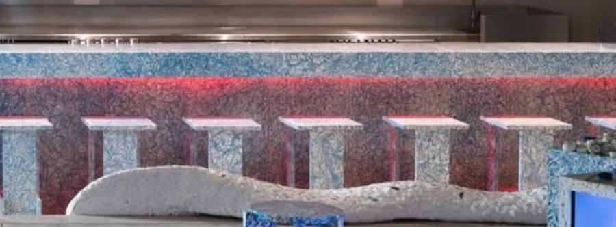

space_available
®
self care
community
centre
tm

A new chapter
at our table.
For
We've put together a new menu, and we'd like you to be among the first to try it.
The menu
Pragmatic comfort.
Honest food, made well, for every day.
Date
Saturday,
17 October
Venue
Space Available
Jakarta
Kemang
Self Care Community Centre (SCCC)
Jl. Kemang Raya No. 8B, Jakarta Selatan 12730
space_available
®